Advenza.
Smart adventures, seamless memories.
Advenza is a mobile app concept designed to help people discover activities around their interests, plan adventures around practical constraints, and revisit the memories they make along the way.
WORK IN PROGRESS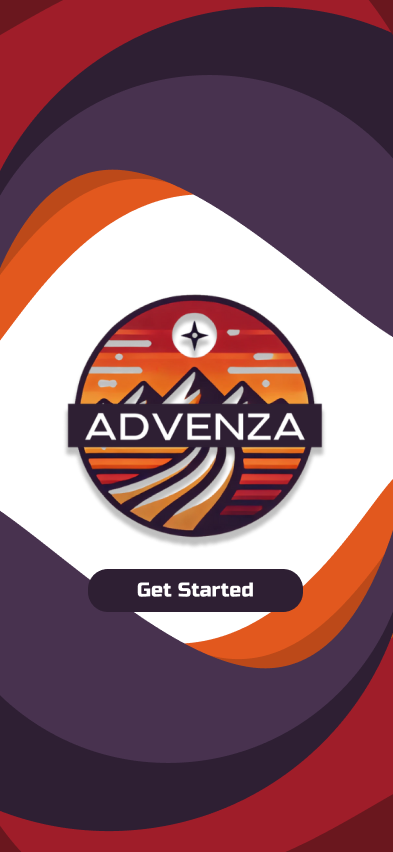
Plan the experience. Keep the memory.
Advenza explores two connected parts of travel: finding something worth doing and holding onto the moments afterward. The concept combines location-based adventure discovery, personalized filters, a visual itinerary, and a trip memory gallery.
Making adventures easier to discover and remember.
The challenge
Planning an outing can involve balancing a destination, available time, budget, travel distance, and activity preferences. Advenza explores how to bring those decisions into one approachable mobile experience.
The concept
Give people a way to browse destinations and activity categories, refine options with filters, follow a visual adventure itinerary, and collect photos or videos associated with their journeys.
Mapping the experience.
Before developing the screens, I mapped the main areas of the app and a task flow for adding a photo to an adventure.
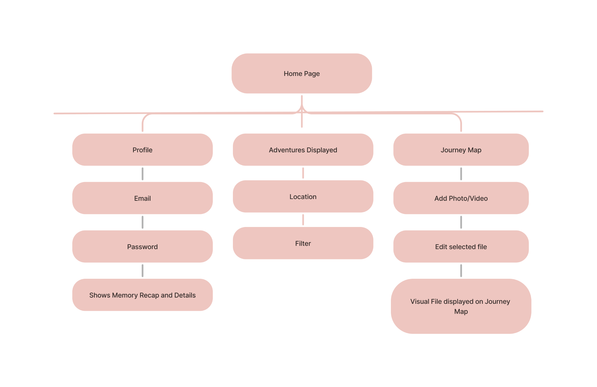
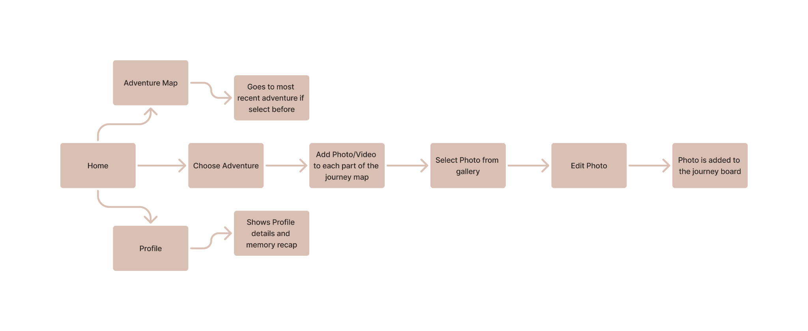
From concepts to low-fidelity screens.
I explored discovery, filtering, itineraries, and memories through hand sketches, then translated those ideas into grayscale digital wireframes to establish layout and navigation.
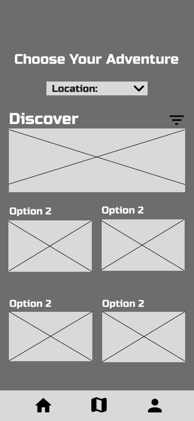
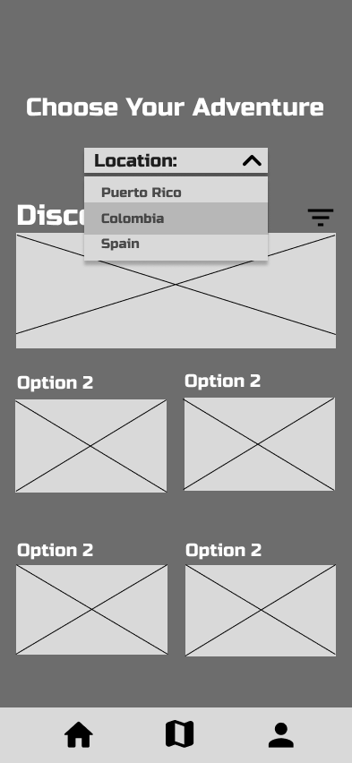
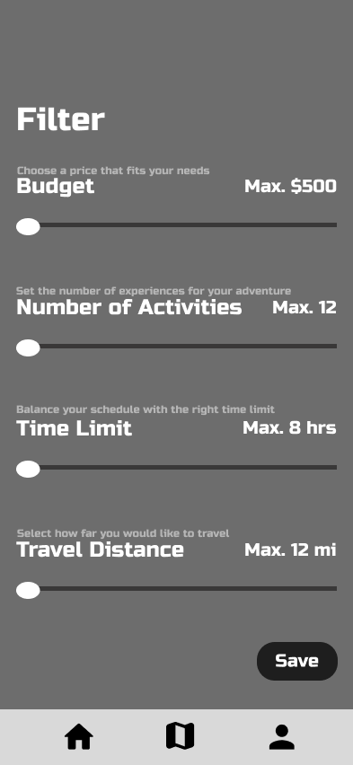
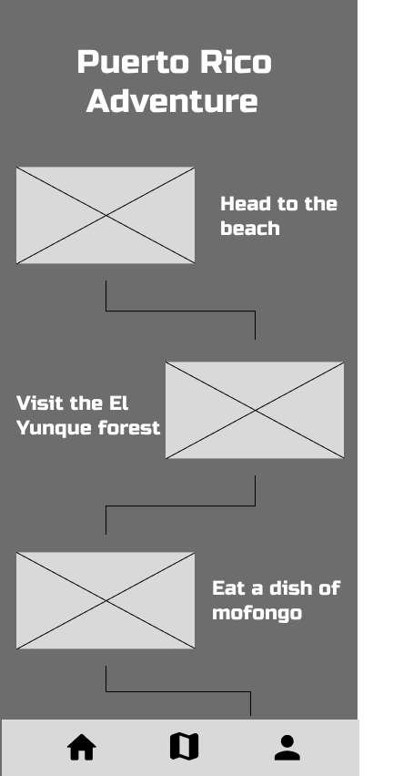
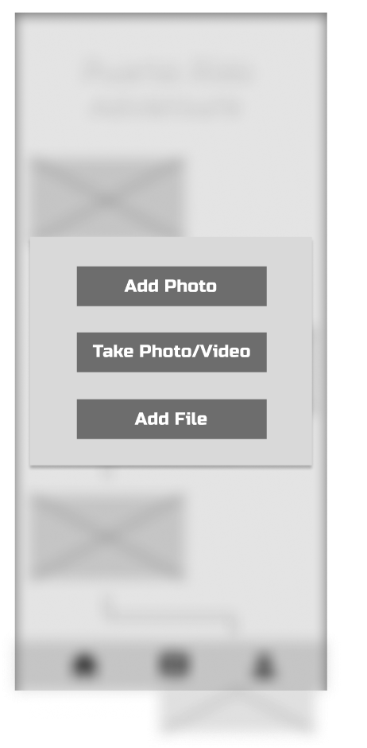
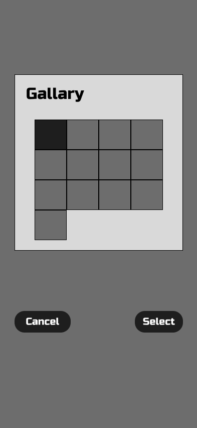
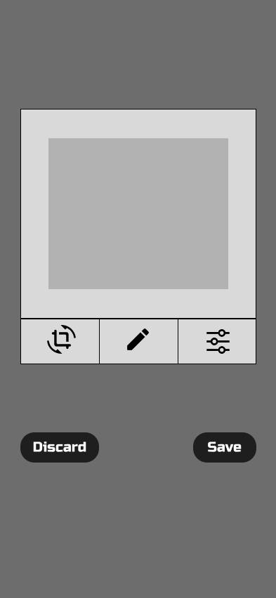
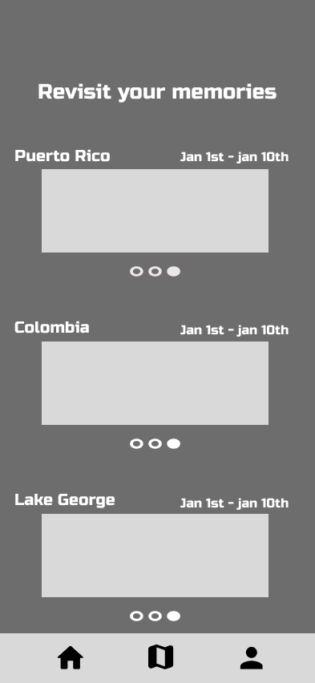
Building the Advenza interface.
The high-fidelity direction introduces a warm red-and-purple brand, destination photography, bold typography, and consistent bottom navigation. These are design explorations; some screens still contain placeholders.
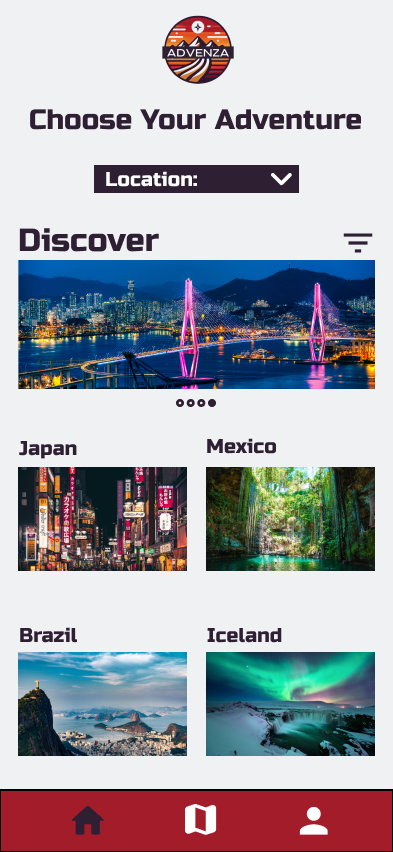
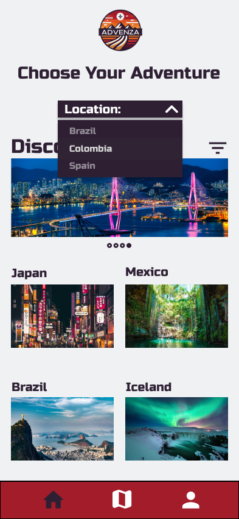
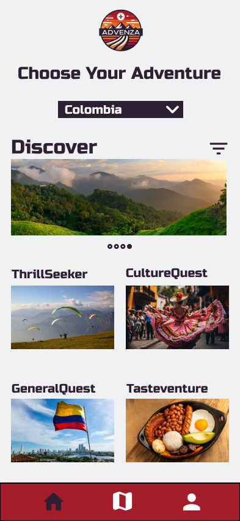
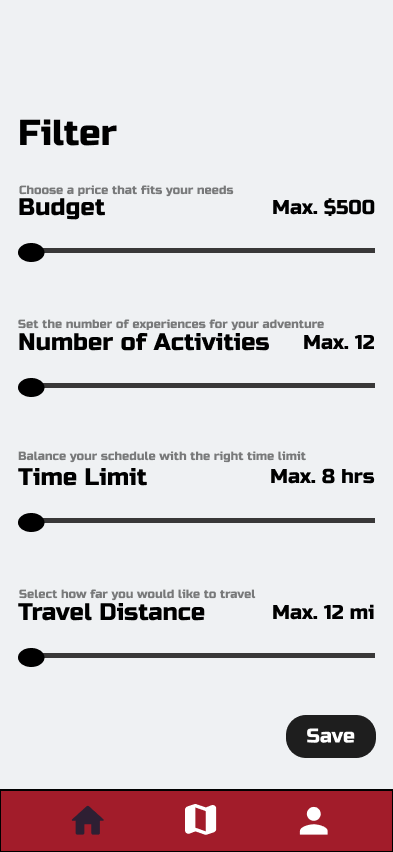
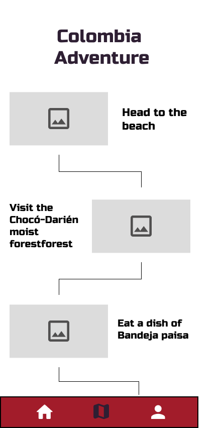
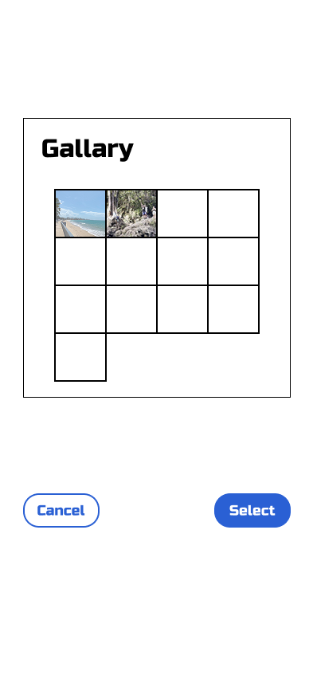
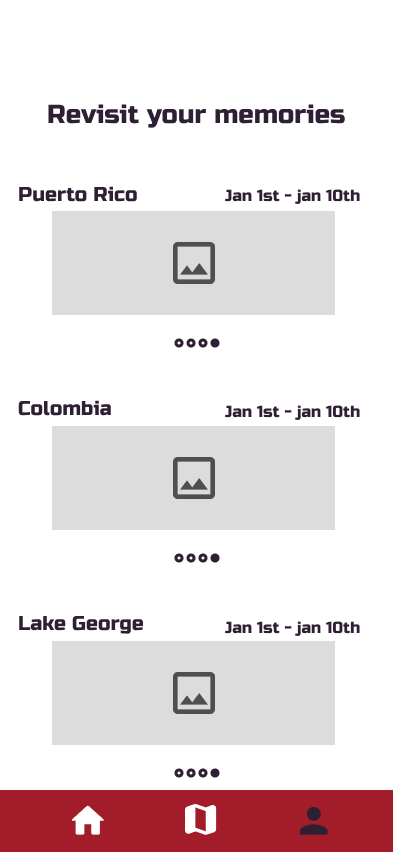
What comes next.
Advenza remains an evolving concept. The current work establishes its navigation, core screen layouts, and visual direction. My next steps are to refine the experience and evaluate how clearly people can complete key tasks.
Refine the screens
Resolve destination inconsistencies, replace remaining placeholders, and improve visual consistency.
Clarify interactions
Show selected filter values more clearly and review navigation and photo-adding states.
Test the experience
Verify the prototype flow and conduct usability testing before making claims about user outcomes.